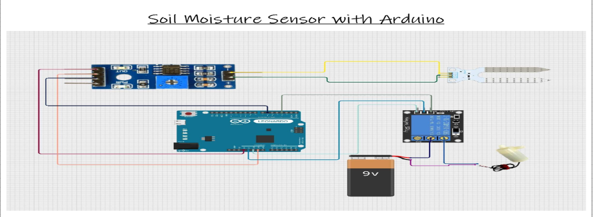
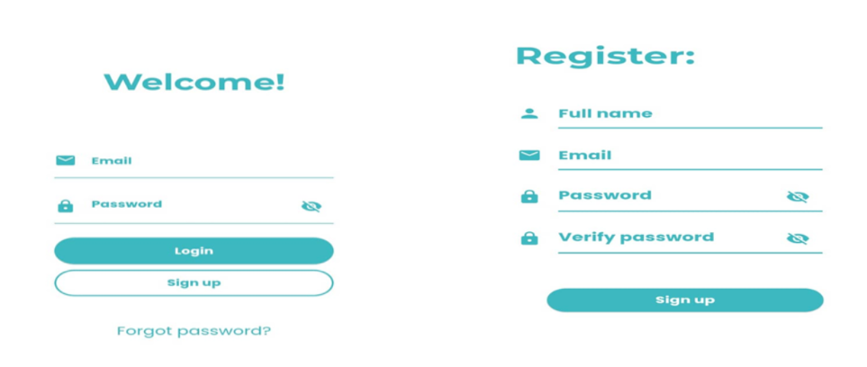
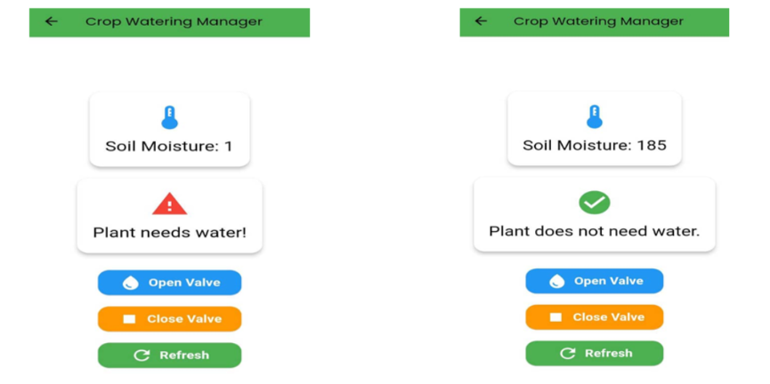

Sensor Visualization
A visual representation of sensor-related information.
Smart Agriculture · IoT · Mobile Application
An intelligent irrigation project combining IoT sensors, hardware components and software technologies to explore connected monitoring and irrigation management.

IRRIGREEN — Sensor visualization
01 — Highlights
A visual representation of sensor-related information.
An authentication screen for accessing the application.
A dashboard interface available after user login.
A project combining sensors, hardware and software components.
02 — Links
03 — The Problem
Irrigation-related activities can benefit from access to information collected through sensors and presented through digital interfaces. Connecting hardware and software offers opportunities to explore more informed monitoring workflows.
IRRIGREEN explores this approach by combining IoT-related components with application interfaces and supporting software.
04 — Requirements
05 — My Role
My work involved the project's application and technical components using Flutter, Python, Arduino and database technologies. The project brought together interface development and IoT-related work in one solution.
06 — Technical Challenges
07 — Architecture & Choices
IoT / Arduino Components
|
v
Sensor Information
|
v
Software Components
| |
v v
Flutter Python
|
v
Application Interface
|
v
Data Storage
08 — Implementation Approach
09 — Results
IRRIGREEN brought together hardware, software and interface components in an intelligent irrigation project. Its demonstrated interface includes sensor visualization, authentication and a dashboard.
10 — Lessons Learned
11 — Screens & Interface

